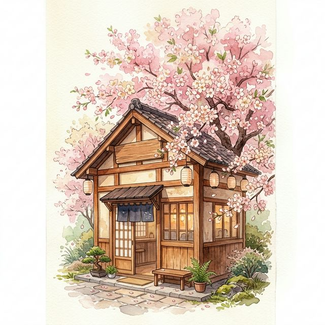

📍 Мадрид, Испания
Где японская эстетика встречается с душой Мадрида. Изысканный кофе, нежные десерты и атмосфера цветущей сакуры.
Загляните к нам — красота в каждой детали
Barista Loco — это место, где каждая чашка кофе рассказывает историю. Мы влюблены в японскую культуру и привезли кусочек Токио в самое сердце Мадрида.
Самый нежный и вкусный кофе — только здесь. Наши бариста обжаривают зёрна по авторским рецептам, а кондитеры каждое утро готовят свежие десерты — от классического тирамису до японских моти.
Забронируйте место в нашей уютной кофейне
Что говорят о нас наши любимые посетители
«Лучший кофе в Мадриде! Латте с сакурой — просто волшебство. Атмосфера невероятная, хочется возвращаться снова и снова.»
«Пришли на матчу и влюбились в это место. Дети обожают моти, а мы — тишину и уют. Теперь это наше семейное кафе!»
«Каждое утро начинаю здесь. За 3 года ни разу не разочаровали. Рекомендую всем — лучшее место в районе!»